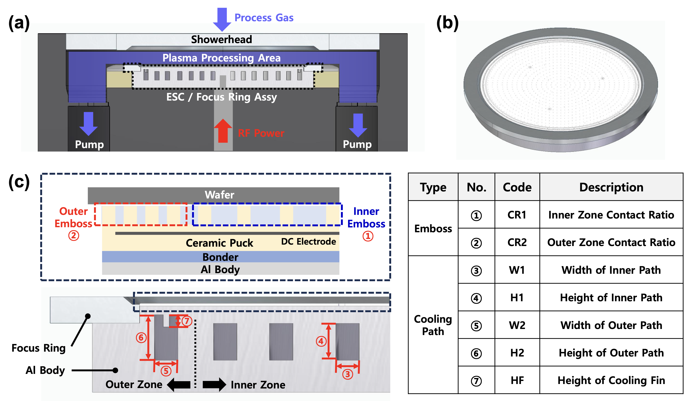
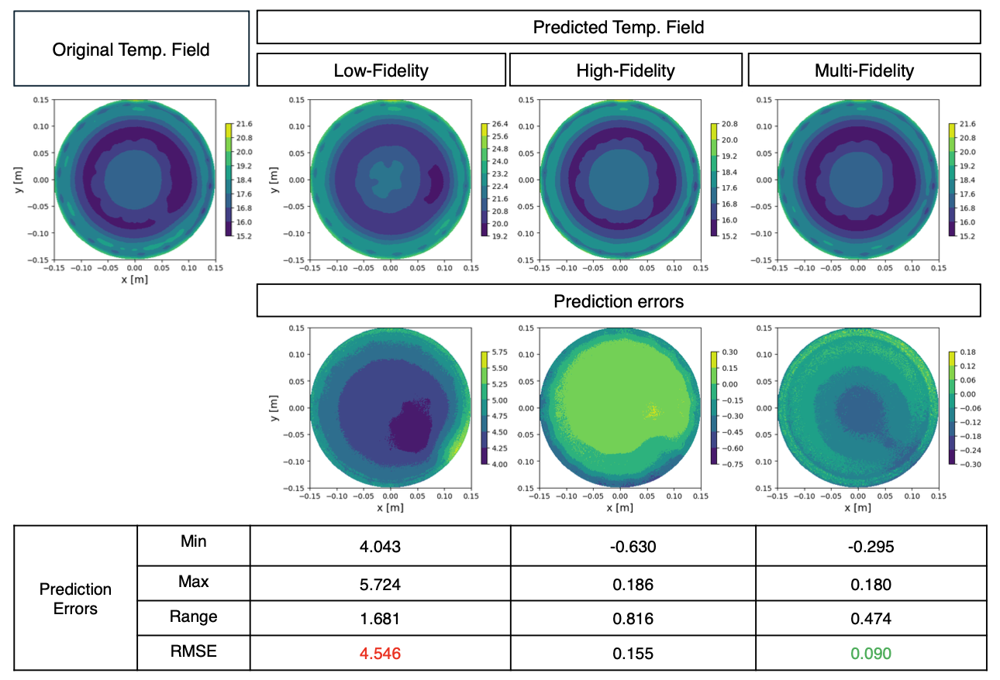

We apply surrogate-based design optimization to an electrostatic chuck for semiconductor manufacturing. Improving wafer-temperature uniformity requires spatial predictions, but high-fidelity thermal-flow simulations limit the amount of training data available for repeated design evaluations.
Learning temperature fields from multiple fidelities
The surrogate projects high- and low-fidelity temperature fields onto a shared POD basis, then predicts the reduced coordinates with multifidelity kriging. In the reported design comparison, it improves all evaluated thermal quantities while using 20% less data-generation cost than the high-fidelity-only surrogate approach, demonstrating the value of combining simulation fidelities.
Paper: Wang et al. [1]





Optimization problem
| Formulation element | Electrostatic-chuck thermal design |
|---|---|
| Case | Electrostatic-chuck thermal design |
| Objective | Minimize temperature uniformity, 3σT. |
| Design variables | |
| Inner-zone emboss contact ratio | 1 |
| Outer-zone emboss contact ratio | 1 |
| Inner coolant-path height | 1 |
| Outer coolant-path height | 1 |
| Inner coolant-path width | 1 |
| Outer coolant-path width | 1 |
| Outer coolant-path fin height | 1 |
| Total design variables | 7 |
| Constraints | |
| Mean temperature (μT ≤ 17 °C) | 1 |
| Maximum temperature (max(T) ≤ 21.5 °C) | 1 |
| Inner contact ratio no greater than outer ratio (CR1 ≤ CR2) | 1 |
| Sum of contact ratios (CR1 + CR2 ≤ 10) | 1 |
| Outer coolant-path width no greater than inner width (W2 ≤ W1) | 1 |
| Fin-height feasibility (F1 ≤ W2 − 2) | 1 |
| Total constraints | 6 |
| Models and conditions | High-fidelity Ansys Fluent dynamic heat-transfer CFD with SST k-ω turbulence; low-fidelity Ansys Mechanical steady-state heat transfer; POD and multifidelity kriging predict the wafer-temperature field. |
| Representative source | Design Optimization of Semiconductor Manufacturing Equipment Using a Novel Multi-Fidelity Surrogate Modeling Approach |
| Source locator | Table 1, PDF page 6. |
References
- Bingran Wang, Min Sung Kim, Taewoong Yoon, Dasom Lee, Byeong-Sang Kim, Dougyong Sung, John T. Hwang. Design Optimization of Semiconductor Manufacturing Equipment Using a Novel Multi-Fidelity Surrogate Modeling Approach. Optimization and Engineering, 27(2), 1451–1479, 2026.PDF
@article{wang2026design, author = {Bingran Wang and Min Sung Kim and Taewoong Yoon and Dasom Lee and Byeong-Sang Kim and Dougyong Sung and John T. Hwang}, title = {Design Optimization of Semiconductor Manufacturing Equipment Using a Novel Multi-Fidelity Surrogate Modeling Approach}, journal = {Optimization and Engineering}, volume = {27}, number = {2}, pages = {1451--1479}, year = {2026} }
Research connections